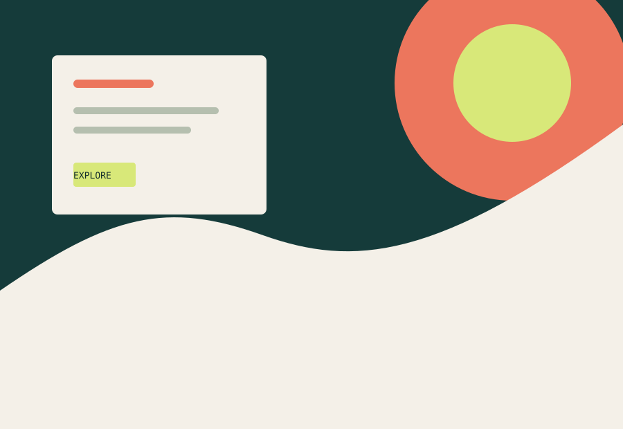
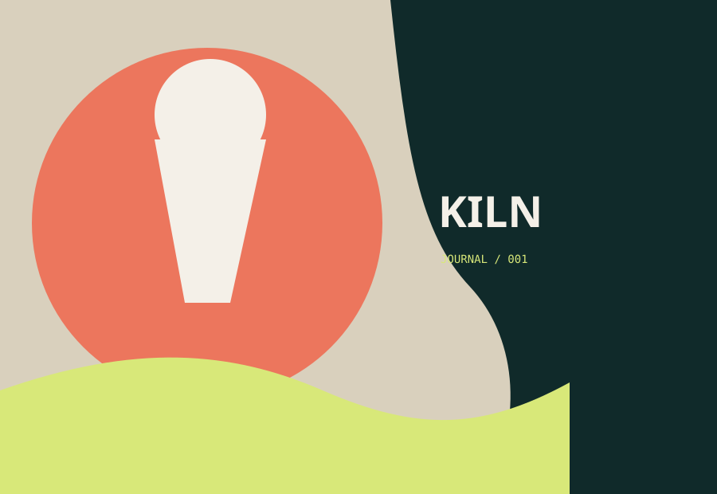
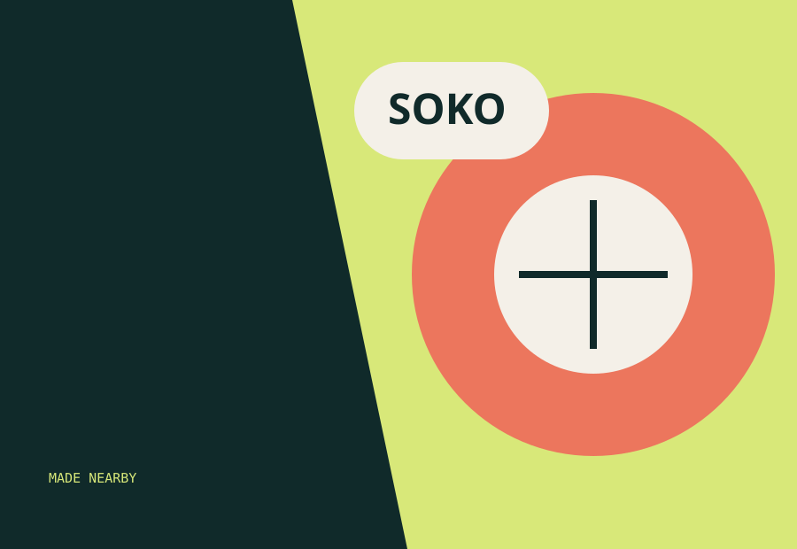

01Digital designer & front-end developer
Making the complex
feel clear.
I’m Nuru, a web creative turning sharp ideas into warm, useful experiences for people and the teams building for them.
curious / precise
Nairobi · 2026
01About
Good work lives
between logic
and feeling.
I care about the part where a rough idea becomes something someone can actually use — a rhythm, a system, a small moment of delight.
My practice sits at the intersection of visual design, front-end craft, and close attention to the people on the other side of the screen. I’m currently studying Web Technologies and Internet Applications at KCA University.
01 / Strategy02 / Interface design03 / Front-end build04 / Motion & prototyping
02Selected work
Small selection, big attention to detail.

02
0303Live signal
A little perspective,
fresh from the web.
This quote is fetched live on every visit from a public, key-free API. No secrets, just a small moment of perspective.
“
Finding a fresh thought…
04Contact
Have a good
question?
For thoughtful projects, curious collaborations, or just a hello.
hello@nuru.studio ↗